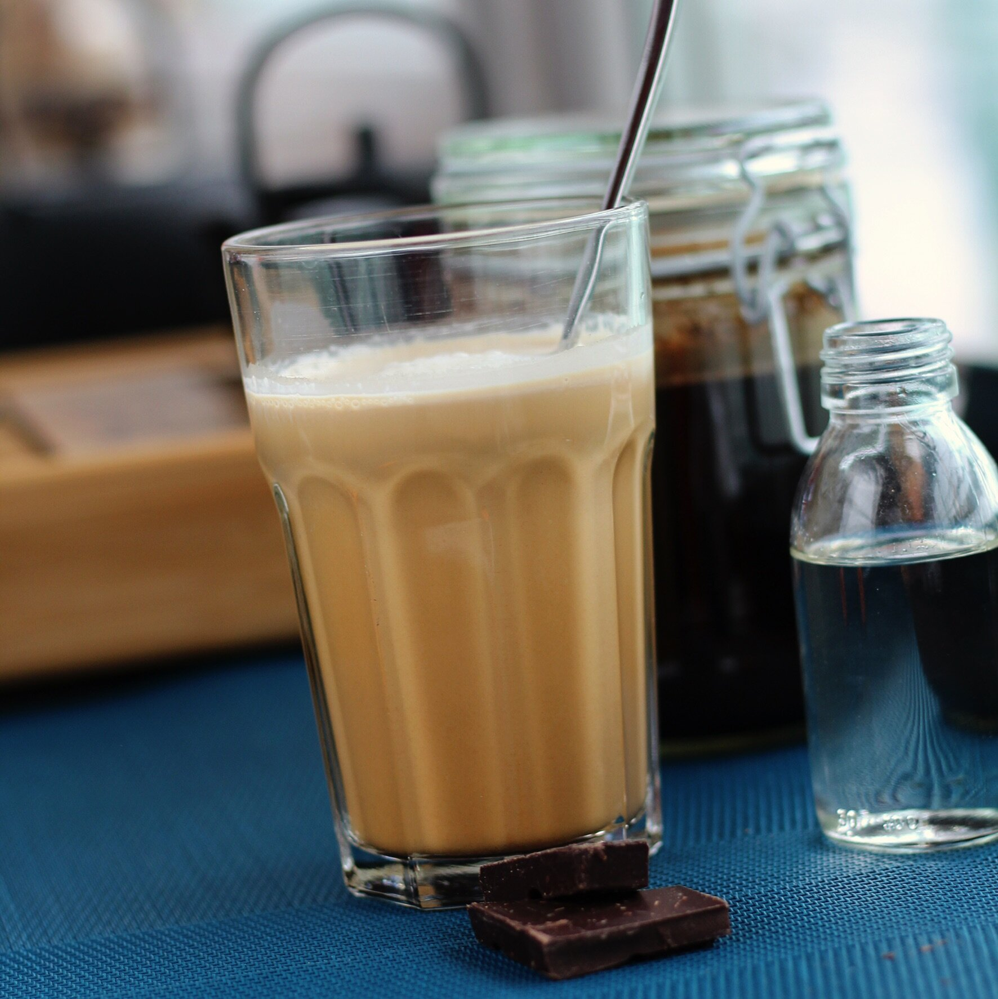

Iced Coffee

Delicious iced coffee. The cold brew method guarantees a drink that's refreshing without being bitter.
Ingredients
- 10 tablespoons coarsely ground coffee beans
- 32 fluid ounces cold water
- ice cubes
Directions
-
Place the coffee grounds into the bottom of a 34-ounce or larger French press.
-
Pour cold water over coffee grounds. Stir with a wooden spoon or chopstick until incorporated, 10 to 15 seconds.
-
Place the French press in the refrigerator for 12 to 24 hours.
-
Press down on the French press to separate water from coffee grounds. Divide coffee among 2 glasses; top with ice.